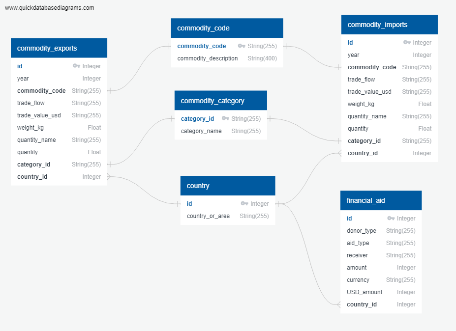

One of the first steps (and perhaps, one of the most important steps) of any data analysis/science workflow is ETL. ETL stands for Extract, Transform, and Load. Extracting data involes retrieving raw, uncleaned data from one or more sources that you find and want to analyze (for example, open source csv files). Transforming data involves ensuring that the data is clean, the format of the data is consistent and the way you want it, and the data is structured in such a way that it is easy to put in a database as well as retrieve it from the database later on. And finally, loading data involves taking the final data and putting it into a production database where data scientists, software developers, and other stakeholders of that data can easily access it but more importantly use it. As you can probably see, ETL is a long and tedious process, which it is supposed to be. But, in the end, it is extremely important process in making data easy to work with and analyze.
For this project, we went through the ETL process using a couple of different open source datasets. In this report, you fill find an overview of the specific steps we took to perform the ETL, information about the technologies that we used, and information about what we learned from performing ETL and how we could make the process more efficient and reliable for doing ETLs in the future.
For this ETL, we found a couple of different open source datasets on global trade and financial aid that we thought would be fun and interesting to look at. The focus of this report is not to analyze the actual data (that might be a future project). The focus of this report is on the ETL process; however, the following table gives a brief overview of the datasets we pulled for this project and where you can go if you would like to learn more about these datasets.
This is an open source dataset available on kaggle. It was originally published by the United Nations Statistic Division on the UNData website. The dataset includes a variety of country trade statistics for exports and imports over the past 30 years, such as year in which the trade took place, a description of the commodity being traded, the flow of trade (i.e., export or import), the currency value of the trade, etc. The format of this dataset is a csv file.
This is an open source dataset available on data.world. This specific dataset includes a variety of information on foreign and national aid provided by different organizations to help with the relief efforts of the April 2015 Nepal earthquake. The dataset includes information such as the country where the aid originated from, the donor organization, the type of aid (for example, cash), the country receiving the aid, the currency amount of the aid, etc. The format of this dataset is a csv file.
The first step we took in performing the ETL was inspect the csv files and model the data. To model the data, we created an entity relationship diagram (ERD). An ERD is a way of quickly visualizing how the different entities in the dataset are related as well as define the entity types (string, integer, float, etc.). Creating a ERD especially helps with understanding how large datasets like the ones we used can be further broken down into smaller datasets/tables that are easier to analyze, read, and work with. Specifically, one of the challenges we faced going through this process was working with large datasets that had millions of rows and had way more columns of data than we needed. The first step in solving that challenge was creating a ERD. To create the ERD, we used a tool called Quick DBD.
After creating the ERD, here are some of our observations and insights for how the different tables are related to each other:
read_hdf
After creating a simple conceptual model of the data we were working with, we started the first step in the ETL process, extracting the data. As mentioned in the About the datasets section, we started this project with two open source datasets in the form of csv files. Because of the large size of these csv files, working with these files in Microsoft Excel or another similar tool was not an option. So, we decided to use a python package called Pandas. As a result, we converted the csv files into Pandas dataframes. To store csv files into Pandas dataframe, the normal way of doing that is using a Pandas method called read_csv. However, one of our datasets included over a million rows of data and was too slow to load/write with using read_csv. Having to wait for the csv to load into a a Pandas dataframe every time we ran our jupyter notebook file using read_csv was extremely slow and painful. After doing some research, this appears to be a common problem when working with large datasets. So, to improve performance of loading and working with the large csv files, we used a Pandas method called read_hdf, which seems to have a huge performance advantage over read_csv. For more information on the performance of read_hdf, check out this article.
After extracting the data, the next part of the ETL process was transforming the data. To transform the data, we used 2 technologies, Pandas and SQLAlchemy. Transforming the data was the most difficult and most time consuming part of this process but the most important because it ensured that all the data was in a consistent format, was broken down into small, manageable chunks of information, and was in a format and structure that could be stored in a database for making efficient queries for analyzing the data later on.
After getting the csv files into Pandas dataframes, we noticed that the column names were not in any particular consistent format and were not consistent among the two datasets. To make the datasets easier to work with and load into the database, we defined a specific format for all column names as these are the column names that will be used for the database tables. For consistency, we renamed all columns for both datasets to be lower case and if a name was more than one word in length, than those words would be separated with an underscore character("_").
There were quite a few values in the datasets that were null (empty values). To make the loading of the data into the final production database easier and to make the data easier to work with, the data cannot contain any null values. As a part of the cleaning process, we removed all null values from the dataframes before being inserted into the database.
One critical column that these datasets did not have was an id column or some type of column to uniquely identify a row in the dataframe. As a result, for each dataframe, we added an auto-incrementing id column. By adding this column, we are now able to easily reference different values within a table, but more important, we are able to define relationships/foreign key relationships across different tables.
The biggest hurdle we faced in the transformation process was working with extra large sized datasets. Specifically,the Global Commodity Trade Statistics dataset included millions of rows of data and was unacceptable to go into the database as this form. Working with this dataframe as is resulted in serious performance problems when trying to read it into pandas as well as when trying to load it into the database. That is, it was extremeley slow and painful to work with. We will get into database performance later on in this report when we talk about loading data,but if we were to load this dataframe into the database just as is, then database queries for analysis would be very slow and almost impossible to work with. So, as a result, we decided to break this specific dataframe into smaller, manageable chunks. As a first step, we removed all information that could be potentially duplicated into separate, mini dataframes. For example, each commodity is associated with a specific category. Because a category can have many commodities, the category column contains duplicate values. As a result, we stripped out the duplicates in the category column and moved this column to its own dataframe. As shown in the ERD diagram above, the commodity_category dataframe, the commodity_exports dataframe, and the commodity_imports dataframe are related by the category_id field/key in each dataframe. Similar to what we did for category, we went through the same process for commodity code. Each commodity has a code associated with it. So, we stripped out the duplicates in the commodity_code column and moved this column to its own dataframe. As show in the ERD diagram above, the commodity_code dataframe, the commodity_imports dataframe, and the commodity_exports dataframe are related by the commodity_code field key in each dataframe. By moving category and commodity code information to separate, mini dataframes, we not only removed duplicate information and now have a single source of truth, but we also gained significant performance improvements for working with the data inside the jupyter notebook file as well as inside the database.
One thing that makes data really nice and easy to work with is consistency. So, the next focus point within the transformation phase was standardizing the list of country names. Within each dataset, there is a country name, which is super cool because eventually we want to be able to join the two datasets into one to be able to do analysis by country. However, because of the inconsistent naming of countries, it is impossible to join the two without standardizing and cleaning the list of countries first. To standardize the list of countries, first, we extracted just the country names from the Global Commodity Trade Statistics dataset into a mini dataframe and extracted the country names from the Financial Aid dataset into a mini dataframe. Then, we stripped the duplicate coutries from each of the new country dataframes, compared the country names, and when the country names were inconsistent, we renamed the country names so that they were the same. This was a bit of manual process of having to go through the list of country names one by one as we could not think of a more automated way of doing this. But, the time it took to complete this task was definitely worth it because now we have a single source of truth of country names between the two datasets and there are no duplicate countries. We now have a standardized, consistent list of countries that can go into the database.
After transforming the data to get it ready to go into the database, the final step in the ETL process is loading the data. For our final production database, we are using a PostgresSQL database, which we are not totally convinced SQL is the right database for this, but we will get into that later.
While transforming the data involved working with Pandas to manipulate the datasets, loading the data involved working with a python package called SQLAlchemy. We chose to use SQLAlchemy for loading the data because with SQLAlchemy, we were able to define the schemas, write queries, and manipulate the SQL databases all through Python. As a result, we were able to avoid writing any raw sql queries. So, if we were to switch from PostgresSQL to a different SQL database like MySQL or SQLite or to a non relational database like MongoDB, that transition/migration would be easier/smoother because we would have to make minimal to no updates to the queries themselves.
Before we can load the final data into the database, we need to define a schema, which defines what the structure of the database will be (tables, columns, fields, relationships, etc.). We really already did this when we created the ERD, but we also need to do this programmatically. We could use raw sql to create the schema, but for consistency and to future proof this in case we were to migrate to a different database later on, we decided to defined the schema of the database using SQLAlchemy. To define the schema of the database using SQLAlchemy, you use a Python class. Each class we create will represent a different table within the database. Within each class, we define the column names (these have to be the same as the column names in the final Pandas dataframes), primary keys, any constraints, column types (e.g., string, integer), foreign keys for creating relationships between tables.
Here is an example of the class that is associated with the commodity_exports table in the database:
class CommodityExports(Base):
__tablename__ = COMMODITY_EXPORTS_TABLE
id = Column(Integer, primary_key=True, nullable=False, unique=True)
year = Column(Integer, nullable=False)
comodity_code = Column(String(255), ForeignKey(f"{COMMODITY_CODE_TABLE}.commodity_code"), nullable=False)
trade_flow = Column(String(255), nullable=False)
trade_value_usd = Column(String(255), nullable=False)
weight_kg = Column(Float, nullable=False)
quantity_name = Column(String(255), nullable=False)
quantity = Column(Float, nullable=False)
category_id = Column(String(255), ForeignKey(f"{COMMODITY_CATEGORY_TABLE}.category_id"), nullable=False)
country_id = Column(Integer, ForeignKey(f"{COUNTRY_TABLE}.id"), nullable=False)
We are almost to the end of the ETL process. As you can see, there are many steps and a lot that has to happen to get raw data all the way into a production database. But, we made it. For this ETL project, this step was challenging due to database performance issues that we ran into. Specifically, we first tried using Pandas' to_sql method for loading the dataframes into the database. For small datasets, this works fine. But, for large and extra large datasets like the ones we are working with, loading data using this method is extremely slow and painful. To get around this, we used a python package called d6tstack, which significantly helped solve our many performance and schema problems we encountered for ingesting raw files. Within the jupyter notebook files, we recorded the time it took to load the dataframes into the database so that you can see how fast d6tstack really is.
To use d6tstack, it is pretty similar to how you would use to_sql if you were using Pandas. To install the d6tstack package, you will need to run the following command in your virtual environment:
pip install d6tstack
As a final step, it is always a good idea to confirm that the data was actually loaded into the database correctly without errors and loaded into the database the way you want it based on the schema you define. For example, as a test, we should be able to run the following SQLAlchemy query to get the list of commodity exports:
exports_list = session.query(CommodityExports).limit(10)
for commodity in exports_list:
print(f"commodity: {commodity.id}, trade flow: {commodity.trade_flow}")
After performing this ETL, we definitely learned a lot about the ETL process and how time consuming it can be, but at the same time, how valuable going through this process really is interms of getting the data to a point where the data is consistent, reliable, flexible, clean, and fast for making queries to do further analysis on the data later on. Using tools like Pandas, SQLAlchemy, and d6tstack, definitely helped make ETL development in Python easier and more straightforward. And, we hope you learned a thing or two about performing ETL in Python ter reading this report. One of the biggest takeaways for us after going through this process was thinking about database peformance and working with extra large raw datasets. We were able to get around some of the performance issues by using certain tools and technologies over others and by breaking the raw data up into smaller, more manageable chunks. But, after going through the ETL, we think a non relational database like MongoDB would have been more reliable and faster for handling these large datasets. Perhaps, that could be a future project to convert the database over to a NoSQL database.